Hier een paar leuke foto's als opwarmertje:


 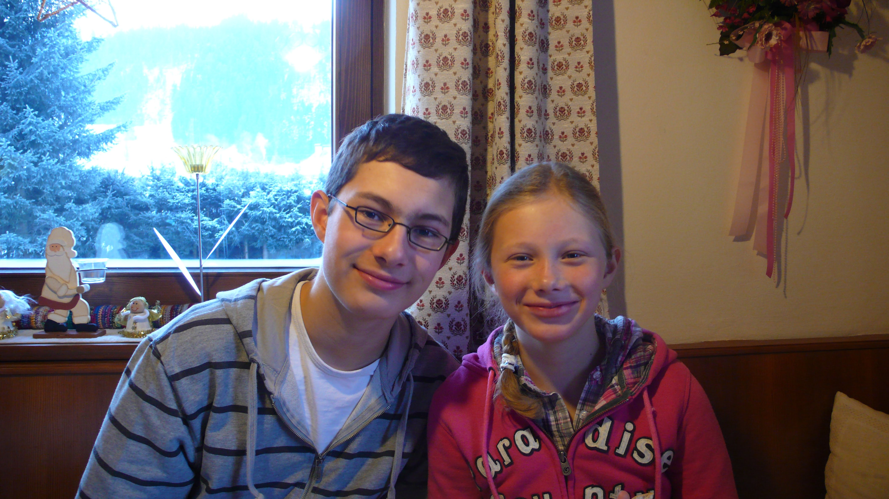
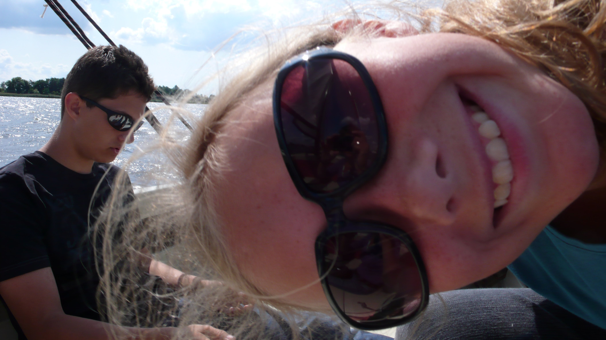
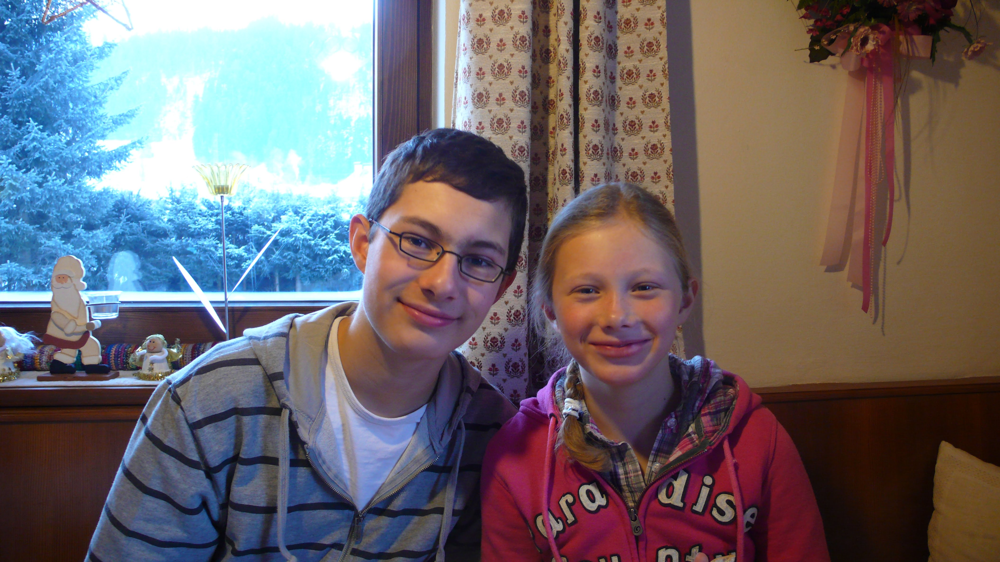
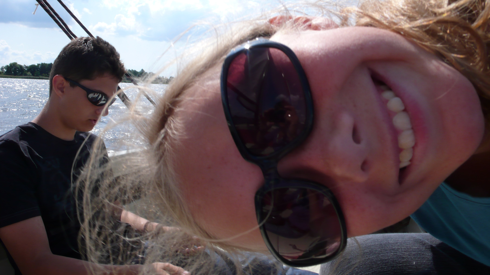


 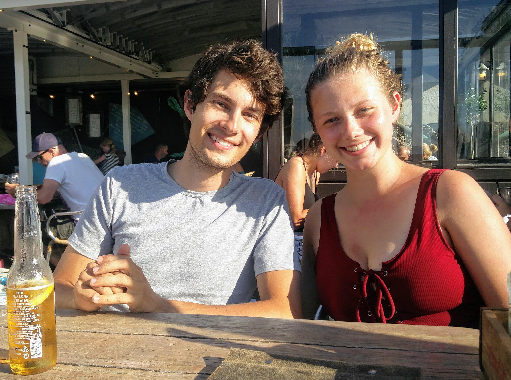
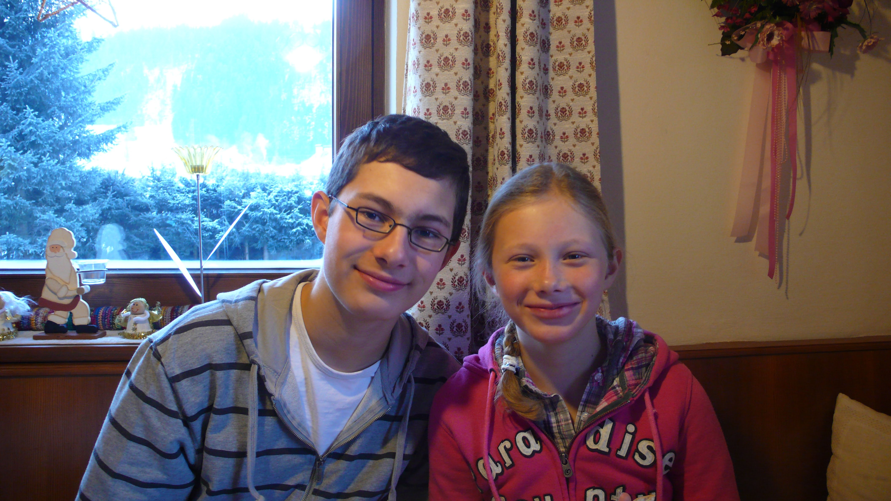
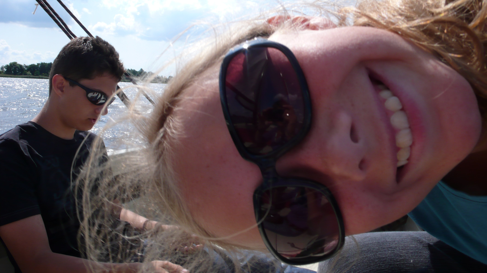
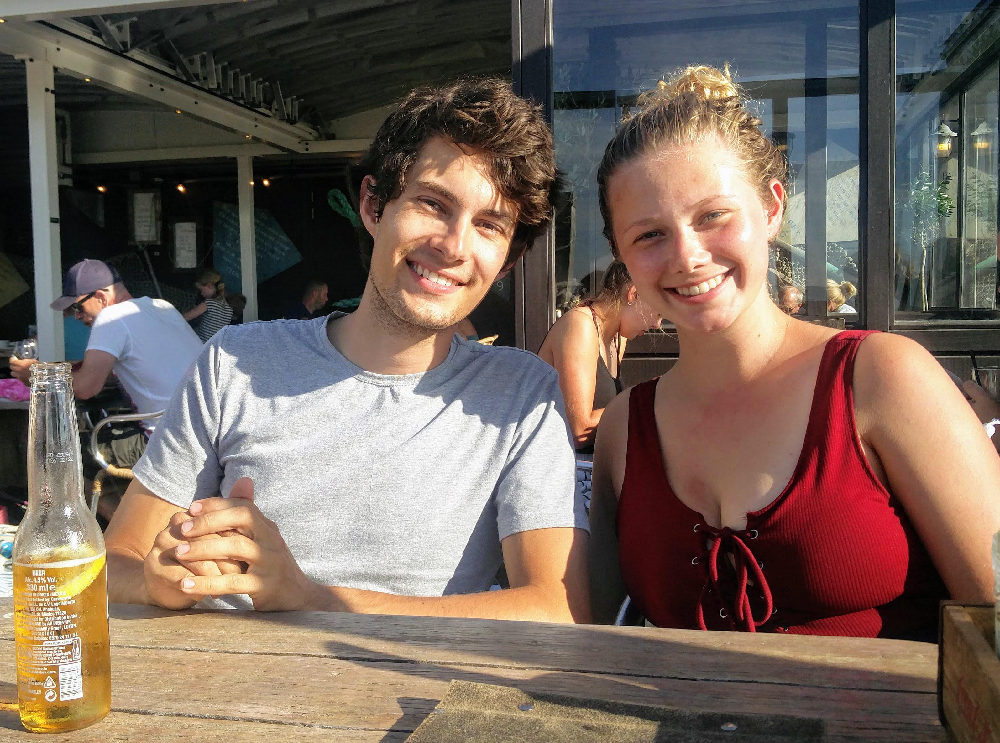
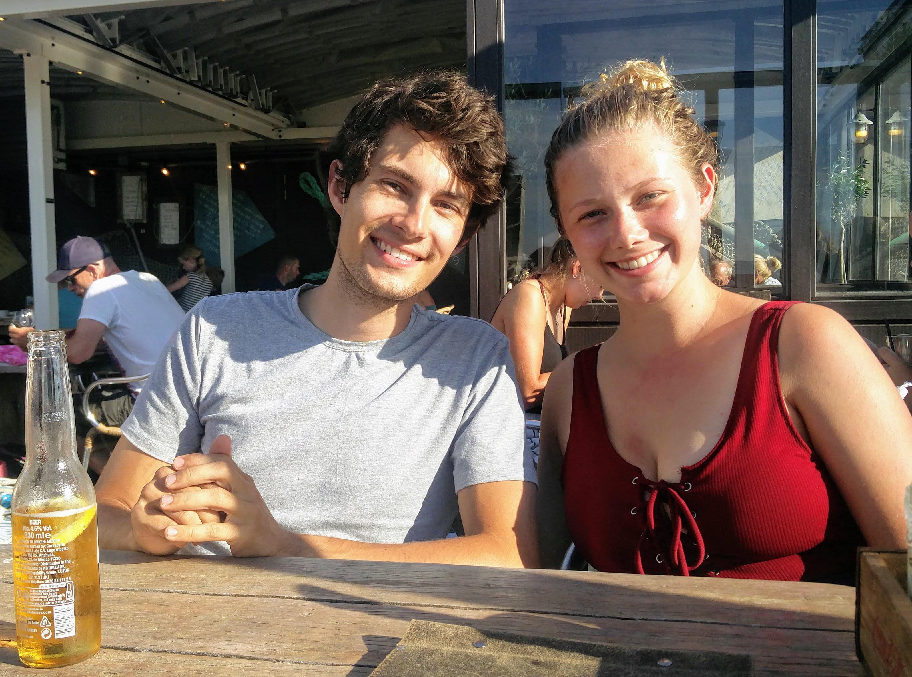
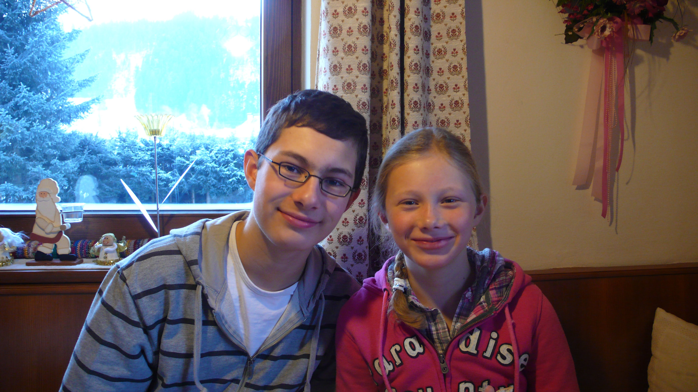
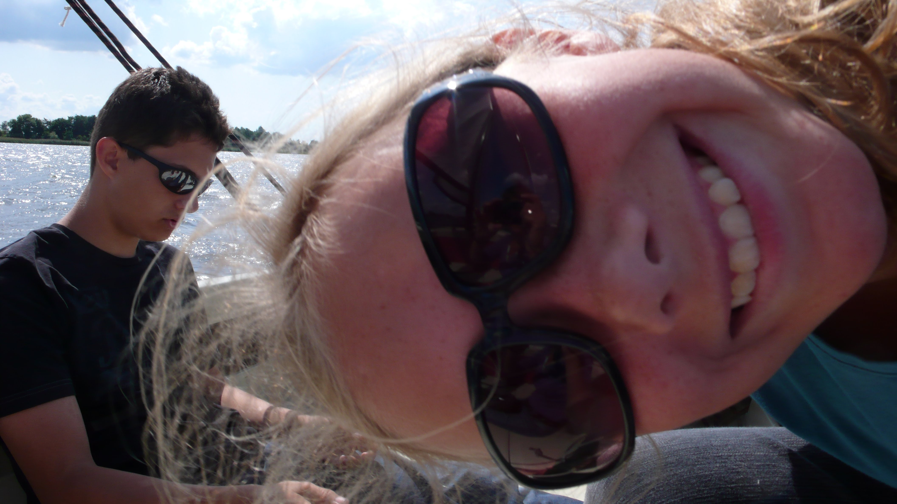
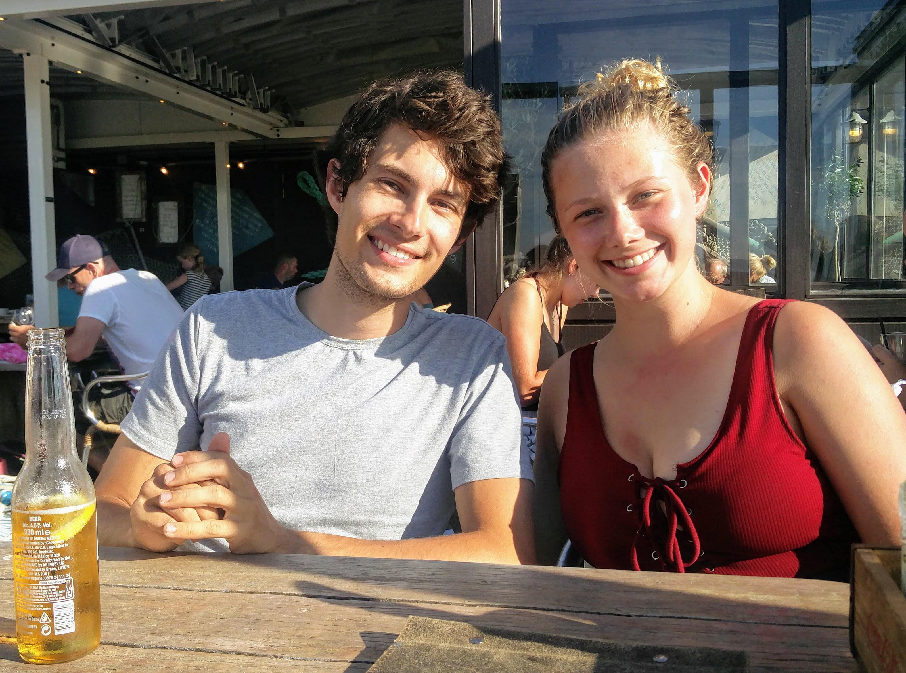
Draga Lisa,
Već 21 godinu. Što će vrijeme reći nevjerojatno brzo. Svake godine postaje teže misliti na nešto što će vam dati za vaš rođendan. Niste stvarno materijalistički, pa sam vam odabrala da vam dajem iskustvo.
Sljedeće godine provest ćemo neko vrijeme zajedno u pustinji Hrvatske. Doista se veselim tome! Nekoliko smo puta razmišljali o zajedničkom slavlju blagdana. Novi Zeland i lijep hod je još uvijek na programu, ali prije toga ćemo prvi put vidjeti hoćemo li preživjeti tjedan dana (nešto duže).
Da bi zabavno vrijeme još zabavnije, želio bih vas odvesti na večeru kada uživamo u prekrasnom hrvatskom otoku. Na moj račun naravno!
Nadam se da ste uzbuđeni kao i ja!
Najgušća zagrljaj,
Maarten
Lieve Lisa,
Alweer 21 jaar oud. Wat gaat de tijd ongelofelijk snel zeg. Elk jaar wordt het weer moeilijker om te bedenken wat ik jou zal geven voor je verjaardag. Je bent niet echt materialistisch ingesteld, dus heb ik er voor gekozen jou een ervaring te geven.
Volgend jaar gaan wij een tijdje samen de wildernis van Kroatië in. Daar heb ik ontzettend veel zin in! We denken er al een tijd aan om samen een vakantie te vieren. Nieuw-Zeeland en mooi wandelen staat nog steeds op het programma, maar voor die tijd gaan we eerst eens kijken of we een weekje (ietsje langer eigenlijk) met elkaar kunnen overleven.
Om die leuke tijd nog wat leuker te maken, wil ik jou graag mee uit eten nemen als we op een prachtig Kroatisch eiland aan het genieten zijn. Op mijn kosten natuurlijk!
Hopelijk heb je er even veel zin in als ik!
De dikste knuffel,
Maarten